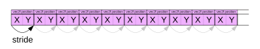
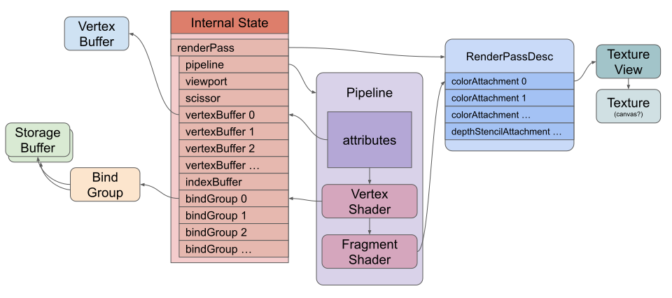
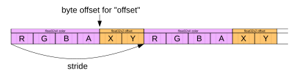
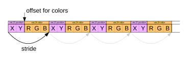
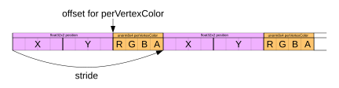
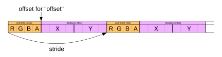
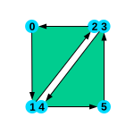
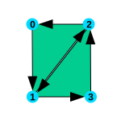

Este artículo es parte de una serie sobre las diversas formas de proporcionar datos a un shader. Cada uno se basa en la lección anterior, por lo que te resultará más fácil entenderlos si los lees en orden.
En el artículo anterior pusimos datos de vértices en un storage buffer y los indexamos usando el builtin vertex_index. Aunque esa técnica está ganando popularidad, la forma tradicional de proporcionar datos de vértices a un vertex shader (shader de vértices) es a través de vertex buffers y atributos.
Los vertex buffers son como cualquier otro buffer de WebGPU; contienen datos. La diferencia es que no accedemos a ellos directamente desde el vertex shader. En su lugar, le decimos a WebGPU qué tipo de datos hay en el buffer y cómo están organizados. Luego, WebGPU extrae los datos del buffer y nos los proporciona.
Tomemos el último ejemplo del artículo anterior y cambiémoslo para usar un vertex buffer en lugar de un storage buffer.
Lo primero que debemos hacer es cambiar el shader para obtener sus datos de vértices de un vertex buffer.
struct OurStruct {
color: vec4f,
offset: vec2f,
};
struct OtherStruct {
scale: vec2f,
};
struct Vertex {
- position: vec2f,
+ @location(0) position: vec2f,
};
struct VSOutput {
@builtin(position) position: vec4f,
@location(0) color: vec4f,
};
@group(0) @binding(0) var<storage, read> ourStructs: array<OurStruct>;
@group(0) @binding(1) var<storage, read> otherStructs: array<OtherStruct>;
-@group(0) @binding(2) var<storage, read> pos: array<Vertex>;
@vertex fn vs(
- @builtin(vertex_index) vertexIndex : u32,
+ vert: Vertex,
@builtin(instance_index) instanceIndex: u32
) -> VSOutput {
let otherStruct = otherStructs[instanceIndex];
let ourStruct = ourStructs[instanceIndex];
var vsOut: VSOutput;
vsOut.position = vec4f(
- pos[vertexIndex].position * otherStruct.scale + ourStruct.offset, 0.0, 1.0);
+ vert.position * otherStruct.scale + ourStruct.offset, 0.0, 1.0);
vsOut.color = ourStruct.color;
return vsOut;
}
...
Como puedes ver, es un cambio pequeño. La parte importante es declarar el campo position con @location(0).
A continuación, tenemos que decirle a WebGPU cómo suministrar datos para @location(0). Para eso, usamos la render pipeline (tubería de renderizado):
const pipeline = device.createRenderPipeline({
label: 'vertex buffer pipeline',
layout: 'auto',
vertex: {
module,
+ buffers: [
+ {
+ arrayStride: 2 * 4, // 2 floats, 4 bytes cada uno
+ attributes: [
+ {shaderLocation: 0, offset: 0, format: 'float32x2'}, // position
+ ],
+ },
+ ],
},
fragment: {
module,
targets: [{ format: presentationFormat }],
},
});
En la entrada vertex del descriptor de la pipeline, añadimos un array buffers que se utiliza para describir cómo extraer datos de uno o más vertex buffers. Para nuestro primer y único buffer, establecemos un arrayStride en número de bytes. Un stride en este caso es cuántos bytes hay desde los datos para un vértice en el buffer hasta el siguiente vértice en el buffer.

Dado que nuestros datos son vec2f, que son dos números float32, establecemos el arrayStride en 8.
Luego definimos un array de atributos. Solo tenemos uno: shaderLocation: 0 corresponde a location(0) en nuestro struct Vertex. offset: 0 dice que los datos para este atributo comienzan en el byte 0 en el vertex buffer. Finalmente, format: 'float32x2' dice que queremos que WebGPU extraiga los datos del buffer como dos números de punto flotante de 32 bits. (Nota: la propiedad attributes se muestra en el diagrama de dibujo simplificado del primer artículo).
Necesitamos cambiar los usos (usages) del buffer que contiene los datos de los vértices de STORAGE a VERTEX y eliminarlo del bind group.
- const vertexStorageBuffer = device.createBuffer({
- label: 'storage buffer vertices',
- size: vertexData.byteLength,
- usage: GPUBufferUsage.STORAGE | GPUBufferUsage.COPY_DST,
- });
+ const vertexBuffer = device.createBuffer({
+ label: 'vertex buffer vertices',
+ size: vertexData.byteLength,
+ usage: GPUBufferUsage.VERTEX | GPUBufferUsage.COPY_DST,
+ });
+ device.queue.writeBuffer(vertexBuffer, 0, vertexData);
const bindGroup = device.createBindGroup({
label: 'bind group for objects',
layout: pipeline.getBindGroupLayout(0),
entries: [
{ binding: 0, resource: staticStorageBuffer },
{ binding: 1, resource: changingStorageBuffer },
- { binding: 2, resource: vertexStorageBuffer },
],
});
Luego, en el momento del dibujo, necesitamos decirle a WebGPU qué vertex buffer usar:
pass.setPipeline(pipeline); + pass.setVertexBuffer(0, vertexBuffer);
El 0 aquí corresponde al primer elemento del array buffers de la render pipeline que especificamos anteriormente.
Con eso, hemos pasado de usar un storage buffer para los vértices a usar un vertex buffer.
El estado cuando se ejecuta el comando de dibujo se vería algo como esto:

El campo format del atributo puede ser uno de estos tipos:
| Formato del vértice | Tipo de dato | Componentes | Tamaño en bytes | Ejemplo de tipo WGSL |
|---|---|---|---|---|
"uint8x2" | unsigned int | 2 | 2 | vec2<u32>, vec2u |
"uint8x4" | unsigned int | 4 | 4 | vec4<u32>, vec4u |
"sint8x2" | signed int | 2 | 2 | vec2<i32>, vec2i |
"sint8x4" | signed int | 4 | 4 | vec4<i32>, vec4i |
"unorm8x2" | unsigned normalized | 2 | 2 | vec2<f32>, vec2f |
"unorm8x4" | unsigned normalized | 4 | 4 | vec4<f32>, vec4f |
"snorm8x2" | signed normalized | 2 | 2 | vec2<f32>, vec2f |
"snorm8x4" | signed normalized | 4 | 4 | vec4<f32>, vec4f |
"uint16x2" | unsigned int | 2 | 4 | vec2<u32>, vec2u |
"uint16x4" | unsigned int | 4 | 8 | vec4<u32>, vec4u |
"sint16x2" | signed int | 2 | 4 | vec2<i32>, vec2i |
"sint16x4" | signed int | 4 | 8 | vec4<i32>, vec4i |
"unorm16x2" | unsigned normalized | 2 | 4 | vec2<f32>, vec2f |
"unorm16x4" | unsigned normalized | 4 | 8 | vec4<f32>, vec4f |
"snorm16x2" | signed normalized | 2 | 4 | vec2<f32>, vec2f |
"snorm16x4" | signed normalized | 4 | 8 | vec4<f32>, vec4f |
"float16x2" | float | 2 | 4 | vec2<f16>, vec2h |
"float16x4" | float | 4 | 8 | vec4<f16>, vec4h |
"float32" | float | 1 | 4 | f32 |
"float32x2" | float | 2 | 8 | vec2<f32>, vec2f |
"float32x3" | float | 3 | 12 | vec3<f32>, vec3f |
"float32x4" | float | 4 | 16 | vec4<f32>, vec4f |
"uint32" | unsigned int | 1 | 4 | u32 |
"uint32x2" | unsigned int | 2 | 8 | vec2<u32>, vec2u |
"uint32x3" | unsigned int | 3 | 12 | vec3<u32>, vec3u |
"uint32x4" | unsigned int | 4 | 16 | vec4<u32>, vec4u |
"sint32" | signed int | 1 | 4 | i32 |
"sint32x2" | signed int | 2 | 8 | vec2<i32>, vec2i |
"sint32x3" | signed int | 3 | 12 | vec3<i32>, vec3i |
"sint32x4" | signed int | 4 | 16 | vec4<i32>, vec4i |
Los atributos pueden avanzar por vértice o por instancia. Avanzarlos por instancia es efectivamente lo mismo que estamos haciendo cuando indexamos otherStructs[instanceIndex] y ourStructs[instanceIndex], donde instanceIndex obtuvo su valor de @builtin(instance_index).
Deshagámonos de los storage buffers y usemos vertex buffers para lograr lo mismo. Primero, cambiemos el shader para usar atributos de vértices en lugar de storage buffers.
-struct OurStruct {
- color: vec4f,
- offset: vec2f,
-};
-
-struct OtherStruct {
- scale: vec2f,
-};
struct Vertex {
@location(0) position: vec2f,
+ @location(1) color: vec4f,
+ @location(2) offset: vec2f,
+ @location(3) scale: vec2f,
};
struct VSOutput {
@builtin(position) position: vec4f,
@location(0) color: vec4f,
};
-@group(0) @binding(0) var<storage, read> ourStructs: array<OurStruct>;
-@group(0) @binding(1) var<storage, read> otherStructs: array<OtherStruct>;
@vertex fn vs(
vert: Vertex,
- @builtin(instance_index) instanceIndex: u32
) -> VSOutput {
- let otherStruct = otherStructs[instanceIndex];
- let ourStruct = ourStructs[instanceIndex];
var vsOut: VSOutput;
- vsOut.position = vec4f(
- vert.position * otherStruct.scale + ourStruct.offset, 0.0, 1.0);
- vsOut.color = ourStruct.color;
+ vsOut.position = vec4f(
+ vert.position * vert.scale + vert.offset, 0.0, 1.0);
+ vsOut.color = vert.color;
return vsOut;
}
@fragment fn fs(vsOut: VSOutput) -> @location(0) vec4f {
return vsOut.color;
}
Ahora necesitamos actualizar nuestra render pipeline para decirle cómo queremos suministrar datos a esos atributos. Para mantener los cambios al mínimo, usaremos los datos que creamos para los storage buffers casi tal cual. Usaremos dos buffers: uno contendrá el color y el offset por instancia, y el otro contendrá la escala (scale).
const pipeline = device.createRenderPipeline({
label: 'flat colors',
layout: 'auto',
vertex: {
module,
buffers: [
{
arrayStride: 2 * 4, // 2 floats, 4 bytes cada uno
attributes: [
{shaderLocation: 0, offset: 0, format: 'float32x2'}, // position
],
},
+ {
+ arrayStride: 6 * 4, // 6 floats, 4 bytes cada uno
+ stepMode: 'instance',
+ attributes: [
+ {shaderLocation: 1, offset: 0, format: 'float32x4'}, // color
+ {shaderLocation: 2, offset: 16, format: 'float32x2'}, // offset
+ ],
+ },
+ {
+ arrayStride: 2 * 4, // 2 floats, 4 bytes cada uno
+ stepMode: 'instance',
+ attributes: [
+ {shaderLocation: 3, offset: 0, format: 'float32x2'}, // scale
+ ],
+ },
],
},
fragment: {
module,
targets: [{ format: presentationFormat }],
},
});
Arriba añadimos 2 entradas al array buffers en nuestra descripción de la pipeline, por lo que ahora hay 3 entradas de buffer, lo que significa que le estamos diciendo a WebGPU que suministraremos los datos en 3 buffers.
Para nuestras 2 nuevas entradas, establecemos el stepMode en 'instance'. Esto significa que este atributo solo avanzará al siguiente valor una vez por instancia. El valor predeterminado es stepMode: 'vertex', que avanza una vez por vértice (y vuelve a empezar para cada instancia).
Tenemos 2 buffers. El que contiene solo scale es sencillo. Al igual que nuestro primer buffer que contiene position, son dos números float32 por vértice.
Nuestro otro buffer contiene color y offset, y van a estar entrelazados en los datos de esta manera:

Así que arriba decimos que el arrayStride para pasar de un conjunto de datos al siguiente es 6 * 4, es decir, 6 números de punto flotante de 32 bits, cada uno de 4 bytes (24 bytes en total). El color comienza en el offset 0, pero el offset comienza a los 16 bytes.
A continuación, podemos cambiar el código que configura los buffers.
- // crea 2 storage buffers
+ // crea 2 vertex buffers
const staticUnitSize =
4 * 4 + // color son 4 floats de 32 bits (4 bytes cada uno)
- 2 * 4 + // offset son 2 floats de 32 bits (4 bytes cada uno)
- 2 * 4; // relleno (padding)
+ 2 * 4; // offset son 2 floats de 32 bits (4 bytes cada uno)
const changingUnitSize =
2 * 4; // scale son 2 floats de 32 bits (4 bytes cada uno)
* const staticVertexBufferSize = staticUnitSize * kNumObjects;
* const changingVertexBufferSize = changingUnitSize * kNumObjects;
* const staticVertexBuffer = device.createBuffer({
* label: 'static vertex for objects',
* size: staticVertexBufferSize,
- usage: GPUBufferUsage.STORAGE | GPUBufferUsage.COPY_DST,
+ usage: GPUBufferUsage.VERTEX | GPUBufferUsage.COPY_DST,
});
* const changingVertexBuffer = device.createBuffer({
* label: 'changing vertex for objects',
* size: changingVertexBufferSize,
- usage: GPUBufferUsage.STORAGE | GPUBufferUsage.COPY_DST,
+ usage: GPUBufferUsage.VERTEX | GPUBufferUsage.COPY_DST,
});
Los atributos de vértices no tienen las mismas restricciones de relleno (padding) que las estructuras en los storage buffers, por lo que ya no necesitamos el relleno. Por lo demás, todo lo que hicimos fue cambiar el uso de STORAGE a VERTEX (y renombramos todas las variables de “storage” a “vertex”).
Como ya no estamos usando los storage buffers, ya no necesitamos el bind group:
- const bindGroup = device.createBindGroup({
- label: 'bind group for objects',
- layout: pipeline.getBindGroupLayout(0),
- entries: [
- { binding: 0, resource: staticStorageBuffer },
- { binding: 1, resource: changingStorageBuffer },
- ],
- });
Finalmente, no necesitamos establecer el bind group pero sí necesitamos establecer los vertex buffers:
const encoder = device.createCommandEncoder();
const pass = encoder.beginRenderPass(renderPassDescriptor);
pass.setPipeline(pipeline);
pass.setVertexBuffer(0, vertexBuffer);
+ pass.setVertexBuffer(1, staticVertexBuffer);
+ pass.setVertexBuffer(2, changingVertexBuffer);
...
- pass.setBindGroup(0, bindGroup);
pass.draw(numVertices, kNumObjects);
pass.end();
Aquí, el primer parámetro de setVertexBuffer corresponde a los elementos del array buffers en la pipeline que creamos anteriormente.
Con eso, tenemos lo mismo que teníamos antes, pero estamos usando todos vertex buffers y ningún storage buffer.
Solo por diversión, añadamos otro atributo para un color por vértice. Primero cambiemos el shader:
struct Vertex {
@location(0) position: vec2f,
@location(1) color: vec4f,
@location(2) offset: vec2f,
@location(3) scale: vec2f,
+ @location(4) perVertexColor: vec3f,
};
struct VSOutput {
@builtin(position) position: vec4f,
@location(0) color: vec4f,
};
@vertex fn vs(
vert: Vertex,
) -> VSOutput {
var vsOut: VSOutput;
vsOut.position = vec4f(
vert.position * vert.scale + vert.offset, 0.0, 1.0);
- vsOut.color = vert.color;
+ vsOut.color = vert.color * vec4f(vert.perVertexColor, 1);
return vsOut;
}
@fragment fn fs(vsOut: VSOutput) -> @location(0) vec4f {
return vsOut.color;
}
Luego necesitamos actualizar la pipeline para describir cómo suministraremos los datos. Vamos a entrelazar los datos de perVertexColor con la position de esta manera:

Por lo tanto, el arrayStride debe cambiarse para cubrir nuestros nuevos datos y debemos añadir el nuevo atributo. Este comienza después de dos números de punto flotante de 32 bits, por lo que su offset en el buffer es de 8 bytes.
const pipeline = device.createRenderPipeline({
label: 'per vertex color',
layout: 'auto',
vertex: {
module,
buffers: [
{
- arrayStride: 2 * 4, // 2 floats, 4 bytes cada uno
+ arrayStride: 5 * 4, // 5 floats, 4 bytes cada uno
attributes: [
{shaderLocation: 0, offset: 0, format: 'float32x2'}, // position
+ {shaderLocation: 4, offset: 8, format: 'float32x3'}, // perVertexColor
],
},
{
arrayStride: 6 * 4, // 6 floats, 4 bytes cada uno
stepMode: 'instance',
attributes: [
{shaderLocation: 1, offset: 0, format: 'float32x4'}, // color
{shaderLocation: 2, offset: 16, format: 'float32x2'}, // offset
],
},
{
arrayStride: 2 * 4, // 2 floats, 4 bytes cada uno
stepMode: 'instance',
attributes: [
{shaderLocation: 3, offset: 0, format: 'float32x2'}, // scale
],
},
],
},
fragment: {
module,
targets: [{ format: presentationFormat }],
},
});
Actualizaremos el código de generación de vértices del círculo para proporcionar un color oscuro para los vértices en el borde exterior del círculo y un color claro para los vértices interiores.
function createCircleVertices({
radius = 1,
numSubdivisions = 24,
innerRadius = 0,
startAngle = 0,
endAngle = Math.PI * 2,
} = {}) {
// 2 triángulos por subdivisión, 3 vértices por tri, 5 valores (xyrgb) cada uno.
const numVertices = numSubdivisions * 3 * 2;
- const vertexData = new Float32Array(numVertices * 2);
+ const vertexData = new Float32Array(numVertices * (2 + 3));
let offset = 0;
- const addVertex = (x, y) => {
+ const addVertex = (x, y, r, g, b) => {
vertexData[offset++] = x;
vertexData[offset++] = y;
+ vertexData[offset++] = r;
+ vertexData[offset++] = g;
+ vertexData[offset++] = b;
};
+ const innerColor = [1, 1, 1];
+ const outerColor = [0.1, 0.1, 0.1];
// 2 triángulos por subdivisión
//
// 0--1 4
// | / /|
// |/ / |
// 2 3--5
for (let i = 0; i < numSubdivisions; ++i) {
const angle1 = startAngle + (i + 0) * (endAngle - startAngle) / numSubdivisions;
const angle2 = startAngle + (i + 1) * (endAngle - startAngle) / numSubdivisions;
const c1 = Math.cos(angle1);
const s1 = Math.sin(angle1);
const c2 = Math.cos(angle2);
const s2 = Math.sin(angle2);
// primer triángulo
- addVertex(c1 * radius, s1 * radius);
- addVertex(c2 * radius, s2 * radius);
- addVertex(c1 * innerRadius, s1 * innerRadius);
+ addVertex(c1 * radius, s1 * radius, ...outerColor);
+ addVertex(c2 * radius, s2 * radius, ...outerColor);
+ addVertex(c1 * innerRadius, s1 * innerRadius, ...innerColor);
// segundo triángulo
- addVertex(c1 * innerRadius, s1 * innerRadius);
- addVertex(c2 * radius, s2 * radius);
- addVertex(c2 * innerRadius, s2 * innerRadius);
+ addVertex(c1 * innerRadius, s1 * innerRadius, ...innerColor);
+ addVertex(c2 * radius, s2 * radius, ...outerColor);
+ addVertex(c2 * innerRadius, s2 * innerRadius, ...innerColor);
}
return {
vertexData,
numVertices,
};
}
Y con eso obtenemos círculos sombreados:
Arriba, en WGSL, declaramos el atributo perVertexColor como un vec3f de esta manera:
struct Vertex {
@location(0) position: vec2f,
@location(1) color: vec4f,
@location(2) offset: vec2f,
@location(3) scale: vec2f,
* @location(4) perVertexColor: vec3f,
};
Y lo usamos así:
@vertex fn vs(
vert: Vertex,
) -> VSOutput {
var vsOut: VSOutput;
vsOut.position = vec4f(
vert.position * vert.scale + vert.offset, 0.0, 1.0);
* vsOut.color = vert.color * vec4f(vert.perVertexColor, 1);
return vsOut;
}
También podríamos declararlo como un vec4f y usarlo así:
struct Vertex {
@location(0) position: vec2f,
@location(1) color: vec4f,
@location(2) offset: vec2f,
@location(3) scale: vec2f,
- @location(4) perVertexColor: vec3f,
+ @location(4) perVertexColor: vec4f,
};
...
@vertex fn vs(
vert: Vertex,
) -> VSOutput {
var vsOut: VSOutput;
vsOut.position = vec4f(
vert.position * vert.scale + vert.offset, 0.0, 1.0);
- vsOut.color = vert.color * vec4f(vert.perVertexColor, 1);
+ vsOut.color = vert.color * vert.perVertexColor;
return vsOut;
}
Y no cambiar nada más. En JavaScript, seguimos suministrando los datos solo como 3 números float por vértice.
{
arrayStride: 5 * 4, // 5 floats, 4 bytes cada uno
attributes: [
{shaderLocation: 0, offset: 0, format: 'float32x2'}, // position
* {shaderLocation: 4, offset: 8, format: 'float32x3'}, // perVertexColor
],
},
Esto funciona porque los atributos siempre tienen 4 valores disponibles en el shader. Sus valores predeterminados son 0, 0, 0, 1, por lo que cualquier valor que no suministremos toma estos valores predeterminados.
Estamos usando valores de punto flotante de 32 bits para los colores. Cada perVertexColor tiene 3 valores para un total de 12 bytes por color por vértice. Cada color tiene 4 valores para un total de 16 bytes por color por instancia.
Podríamos optimizar eso usando valores de 8 bits y diciéndole a WebGPU que deben normalizarse de 0 ↔ 255 a 0.0 ↔ 1.0.
Mirando la lista de formatos de atributos válidos, no hay un formato de 8 bits de 3 valores, pero hay 'unorm8x4', así que usemos ese.
Primero, cambiemos el código que genera los vértices para almacenar los colores como valores de 8 bits que serán normalizados:
function createCircleVertices({
radius = 1,
numSubdivisions = 24,
innerRadius = 0,
startAngle = 0,
endAngle = Math.PI * 2,
} = {}) {
- // 2 triángulos por subdivisión, 3 vértices por tri, 5 valores (xyrgb) cada uno.
+ // 2 triángulos por subdivisión, 3 vértices por tri
const numVertices = numSubdivisions * 3 * 2;
- const vertexData = new Float32Array(numVertices * (2 + 3));
+ // 2 valores de 32 bits para la posición (xy) y 1 valor de 32 bits para el color (rgb_)
+ // El valor de color de 32 bits se escribirá/leerá como 4 valores de 8 bits
+ const vertexData = new Float32Array(numVertices * (2 + 1));
+ const colorData = new Uint8Array(vertexData.buffer);
let offset = 0;
+ let colorOffset = 8;
const addVertex = (x, y, r, g, b) => {
vertexData[offset++] = x;
vertexData[offset++] = y;
- vertexData[offset++] = r;
- vertexData[offset++] = g;
- vertexData[offset++] = b;
+ offset += 1; // salta el color
+ colorData[colorOffset++] = r * 255;
+ colorData[colorOffset++] = g * 255;
+ colorData[colorOffset++] = b * 255;
+ colorOffset += 9; // salta el byte extra y la posición
};
Arriba creamos colorData, que es una vista Uint8Array de los mismos datos que vertexData. Revisa el artículo sobre la disposición de la memoria de datos (data memory layout) si esto no está claro.
Luego usamos colorData para insertar los colores, expandiéndolos de 0 ↔ 1 a 0 ↔ 255.
La disposición de memoria de estos datos (por vértice) es así:

También necesitamos actualizar los datos por instancia.
const kNumObjects = 100;
const objectInfos = [];
// crea 2 vertex buffers
const staticUnitSize =
- 4 * 4 + // color son 4 floats de 32 bits (4 bytes cada uno)
+ 4 + // color son 4 bytes
2 * 4; // offset son 2 floats de 32 bits (4 bytes cada uno)
const changingUnitSize =
2 * 4; // scale son 2 floats de 32 bits (4 bytes cada uno)
const staticVertexBufferSize = staticUnitSize * kNumObjects;
const changingVertexBufferSize = changingUnitSize * kNumObjects;
const staticVertexBuffer = device.createBuffer({
label: 'static vertex for objects',
size: staticVertexBufferSize,
usage: GPUBufferUsage.VERTEX | GPUBufferUsage.COPY_DST,
});
const changingVertexBuffer = device.createBuffer({
label: 'changing storage for objects',
size: changingVertexBufferSize,
usage: GPUBufferUsage.VERTEX | GPUBufferUsage.COPY_DST,
});
// offsets a los diversos valores de uniform en índices float32
const kColorOffset = 0;
- const kOffsetOffset = 4;
+ const kOffsetOffset = 1;
const kScaleOffset = 0;
{
- const staticStorageValues = new Float32Array(staticStorageBufferSize / 4);
+ const staticVertexValuesU8 = new Uint8Array(staticVertexBufferSize);
+ const staticVertexValuesF32 = new Float32Array(staticVertexValuesU8.buffer);
for (let i = 0; i < kNumObjects; ++i) {
- const staticOffset = i * (staticUnitSize / 4);
+ const staticOffsetU8 = i * staticUnitSize;
+ const staticOffsetF32 = staticOffsetU8 / 4;
// Estos solo se establecen una vez, así que establécelos ahora
- staticStorageValues.set([rand(), rand(), rand(), 1], staticOffset + kColorOffset); // establece el color
- staticStorageValues.set([rand(-0.9, 0.9), rand(-0.9, 0.9)], staticOffset + kOffsetOffset); // establece el offset
+ staticVertexValuesU8.set( // establece el color
+ [rand() * 255, rand() * 255, rand() * 255, 255],
+ staticOffsetU8 + kColorOffset);
+
+ staticVertexValuesF32.set( // establece el offset
+ [rand(-0.9, 0.9), rand(-0.9, 0.9)],
+ staticOffsetF32 + kOffsetOffset);
objectInfos.push({
scale: rand(0.2, 0.5),
});
}
- device.queue.writeBuffer(staticVertexBuffer, 0, staticStorageValues);
+ device.queue.writeBuffer(staticVertexBuffer, 0, staticVertexValuesF32);
}
La disposición para los datos por instancia es así:

Luego necesitamos cambiar la pipeline para extraer los datos como valores sin signo de 8 bits y normalizarlos de nuevo a 0 ↔ 1, actualizar los offsets y actualizar el stride a su nuevo tamaño.
const pipeline = device.createRenderPipeline({
label: 'per vertex color',
layout: 'auto',
vertex: {
module,
buffers: [
{
- arrayStride: 5 * 4, // 5 floats, 4 bytes cada uno
+ arrayStride: 2 * 4 + 4, // 2 floats, 4 bytes cada uno + 4 bytes
attributes: [
{shaderLocation: 0, offset: 0, format: 'float32x2'}, // position
- {shaderLocation: 4, offset: 8, format: 'float32x3'}, // perVertexColor
+ {shaderLocation: 4, offset: 8, format: 'unorm8x4'}, // perVertexColor
],
},
{
- arrayStride: 6 * 4, // 6 floats, 4 bytes cada uno
+ arrayStride: 4 + 2 * 4, // 4 bytes + 2 floats, 4 bytes cada uno
stepMode: 'instance',
attributes: [
- {shaderLocation: 1, offset: 0, format: 'float32x4'}, // color
- {shaderLocation: 2, offset: 16, format: 'float32x2'}, // offset
+ {shaderLocation: 1, offset: 0, format: 'unorm8x4'}, // color
+ {shaderLocation: 2, offset: 4, format: 'float32x2'}, // offset
],
},
{
arrayStride: 2 * 4, // 2 floats, 4 bytes cada uno
stepMode: 'instance',
attributes: [
{shaderLocation: 3, offset: 0, format: 'float32x2'}, // scale
],
},
],
},
fragment: {
module,
targets: [{ format: presentationFormat }],
},
});
And con eso hemos ahorrado algo de espacio. Antes usábamos 20 bytes por vértice, ahora usamos 12 bytes por vértice, un ahorro del 40%. Y usábamos 24 bytes por instancia, ahora usamos 12, un ahorro del 50%.
Ten en cuenta que no tenemos que usar un struct. Esto funcionaría igual de bien:
@vertex fn vs(
- vert: Vertex,
+ @location(0) position: vec2f,
+ @location(1) color: vec4f,
+ @location(2) offset: vec2f,
+ @location(3) scale: vec2f,
+ @location(4) perVertexColor: vec3f,
) -> VSOutput {
var vsOut: VSOutput;
- vsOut.position = vec4f(
- vert.position * vert.scale + vert.offset, 0.0, 1.0);
- vsOut.color = vert.color * vec4f(vert.perVertexColor, 1);
+ vsOut.position = vec4f(
+ position * scale + offset, 0.0, 1.0);
+ vsOut.color = color * vec4f(perVertexColor, 1);
return vsOut;
}
Como dijimos antes, a WebGPU solo le importa que definamos las locations en el shader y suministremos datos a esas ubicaciones a través de la API.
Una última cosa que cubrir aquí son los index buffers. Los index buffers describen el orden en que se procesan y utilizan los vértices.
Puedes pensar en draw como si recorriera los vértices en orden:
0, 1, 2, 3, 4, 5, .....
Con un index buffer podemos cambiar ese orden.
Estábamos creando 6 vértices por subdivisión del círculo, aunque 2 de ellos eran idénticos.

Ahora, en su lugar, solo crearemos 4 pero usaremos índices para usar those 4 vértices 6 veces, diciéndole a WebGPU que dibuje los índices en este orden:
0, 1, 2, 2, 1, 3, ...

function createCircleVertices({
radius = 1,
numSubdivisions = 24,
innerRadius = 0,
startAngle = 0,
endAngle = Math.PI * 2,
} = {}) {
- // 2 triángulos por subdivisión, 3 vértices por tri
- const numVertices = numSubdivisions * 3 * 2;
+ // 2 vértices en cada subdivisión, + 1 para cerrar el círculo.
+ const numVertices = (numSubdivisions + 1) * 2;
// 2 valores de 32 bits para la posición (xy) y 1 valor de 32 bits para el color (rgb)
// El valor de color de 32 bits se escribirá/leerá como 4 valores de 8 bits
const vertexData = new Float32Array(numVertices * (2 + 1));
const colorData = new Uint8Array(vertexData.buffer);
let offset = 0;
let colorOffset = 8;
const addVertex = (x, y, r, g, b) => {
vertexData[offset++] = x;
vertexData[offset++] = y;
offset += 1; // salta el color
colorData[colorOffset++] = r * 255;
colorData[colorOffset++] = g * 255;
colorData[colorOffset++] = b * 255;
colorOffset += 9; // salta el byte extra y la posición
};
const innerColor = [1, 1, 1];
const outerColor = [0.1, 0.1, 0.1];
- // 2 triángulos por subdivisión
- //
- // 0--1 4
- // | / /|
- // |/ / |
- // 2 3--5
- for (let i = 0; i < numSubdivisions; ++i) {
- const angle1 = startAngle + (i + 0) * (endAngle - startAngle) / numSubdivisions;
- const angle2 = startAngle + (i + 1) * (endAngle - startAngle) / numSubdivisions;
-
- const c1 = Math.cos(angle1);
- const s1 = Math.sin(angle1);
- const c2 = Math.cos(angle2);
- const s2 = Math.sin(angle2);
-
- // primer triángulo
- addVertex(c1 * radius, s1 * radius, ...outerColor);
- addVertex(c2 * radius, s2 * radius, ...outerColor);
- addVertex(c1 * innerRadius, s1 * innerRadius, ...innerColor);
-
- // segundo triángulo
- addVertex(c1 * innerRadius, s1 * innerRadius, ...innerColor);
- addVertex(c2 * radius, s2 * radius, ...outerColor);
- addVertex(c2 * innerRadius, s2 * innerRadius, ...innerColor);
- }
+ // 2 triángulos por subdivisión
+ //
+ // 0 2 4 6 8 ...
+ //
+ // 1 3 5 7 9 ...
+ for (let i = 0; i <= numSubdivisions; ++i) {
+ const angle = startAngle + (i + 0) * (endAngle - startAngle) / numSubdivisions;
+
+ const c1 = Math.cos(angle);
+ const s1 = Math.sin(angle);
+
+ addVertex(c1 * radius, s1 * radius, ...outerColor);
+ addVertex(c1 * innerRadius, s1 * innerRadius, ...innerColor);
}
+ const indexData = new Uint32Array(numSubdivisions * 6);
+ let ndx = 0;
+ // 1er tri 2do tri 3er tri 4to tri
+ // 0 1 2 2 1 3 2 3 4 4 3 5
+ //
+ // 0--2 2 2--4 4 .....
+ // | / /| | / /|
+ // |/ / | |/ / |
+ // 1 1--3 3 3--5 .....
+ for (let i = 0; i < numSubdivisions; ++i) {
+ const ndxOffset = i * 2;
+ // primer triángulo
+ indexData[ndx++] = ndxOffset;
+ indexData[ndx++] = ndxOffset + 1;
+ indexData[ndx++] = ndxOffset + 2;
+ // segundo triángulo
+ indexData[ndx++] = ndxOffset + 2;
+ indexData[ndx++] = ndxOffset + 1;
+ indexData[ndx++] = ndxOffset + 3;
+ }
return {
vertexData,
+ indexData,
- numVertices,
+ numVertices: indexData.length,
};
}
Luego necesitamos crear un index buffer:
- const { vertexData, numVertices } = createCircleVertices({
+ const { vertexData, indexData, numVertices } = createCircleVertices({
radius: 0.5,
innerRadius: 0.25,
});
const vertexBuffer = device.createBuffer({
label: 'vertex buffer',
size: vertexData.byteLength,
usage: GPUBufferUsage.VERTEX | GPUBufferUsage.COPY_DST,
});
device.queue.writeBuffer(vertexBuffer, 0, vertexData);
+ const indexBuffer = device.createBuffer({
+ label: 'index buffer',
+ size: indexData.byteLength,
+ usage: GPUBufferUsage.INDEX | GPUBufferUsage.COPY_DST,
+ });
+ device.queue.writeBuffer(indexBuffer, 0, indexData);
Fíjate que establecimos el uso en INDEX.
Finalmente, en el momento del dibujo, necesitamos especificar el index buffer:
pass.setPipeline(pipeline);
pass.setVertexBuffer(0, vertexBuffer);
pass.setVertexBuffer(1, staticVertexBuffer);
pass.setVertexBuffer(2, changingVertexBuffer);
+ pass.setIndexBuffer(indexBuffer, 'uint32');
Debido a que nuestro buffer contiene índices de enteros sin signo de 32 bits, necesitamos pasar 'uint32' aquí. También podríamos usar índices sin signo de 16 bits, en cuyo caso pasaríamos 'uint16'.
Y necesitamos llamar a drawIndexed en lugar de draw:
- pass.draw(numVertices, kNumObjects); + pass.drawIndexed(numVertices, kNumObjects);
Con eso ahorramos algo de espacio (33%) y, potencialmente, una cantidad similar de procesamiento al calcular los vértices en el vertex shader, ya que es posible que la GPU pueda reutilizar los vértices que ya ha calculado.
Ten en cuenta que también podríamos haber utilizado un index buffer con el ejemplo de storage buffer del artículo anterior. En ese caso, el valor de @builtin(vertex_index) que se pasa coincide con el índice del index buffer.
A continuación, cubriremos las texturas.